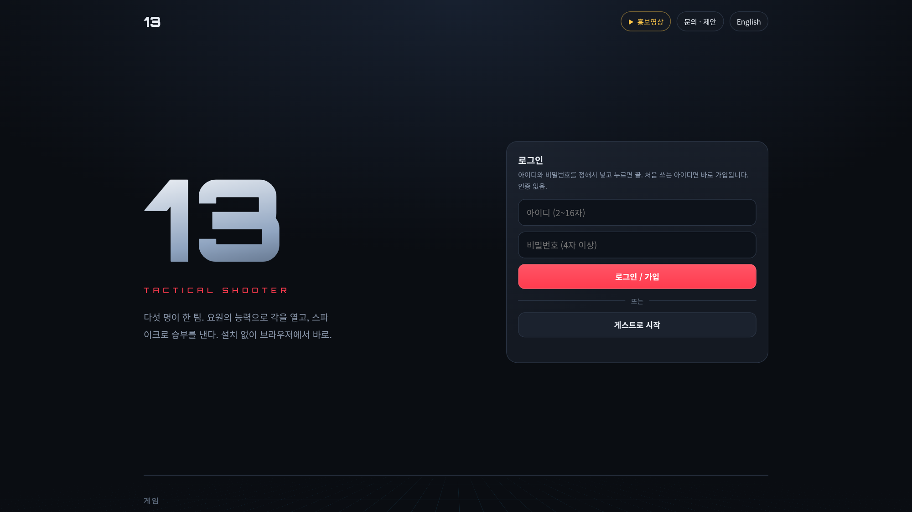
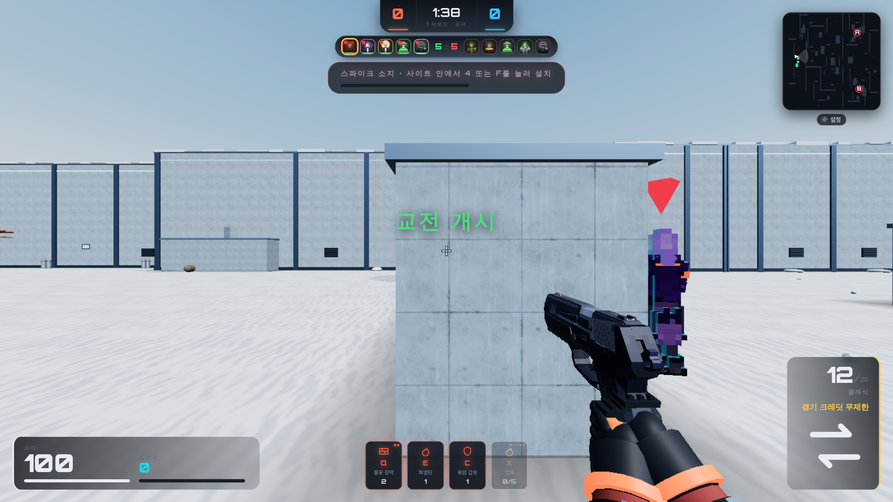
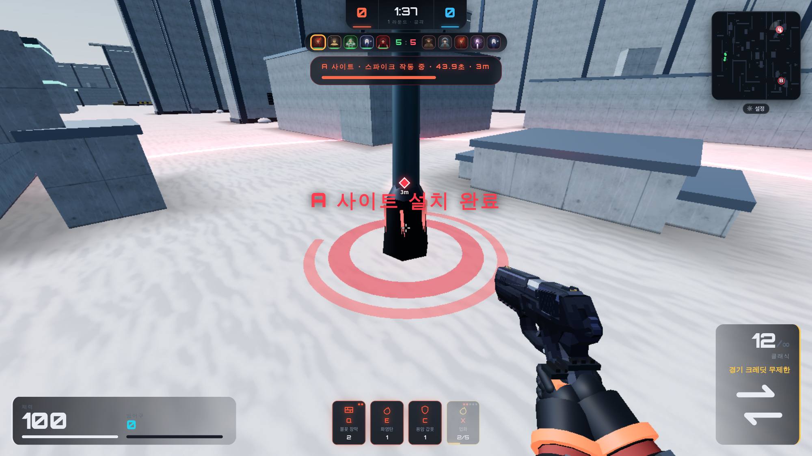
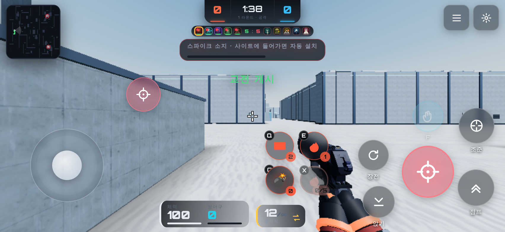

링크 하나면 된다.
A. 종이 위의 탭
따뜻한 중성 바탕 위에 브라우저 창 하나. 게임은 늘 탭 안에 있고, 처음의 다운로드 바가 주소창으로 바뀐다.
얻는 것: “브라우저에서 바로”가 설명 없이 그림으로 읽힌다. 어두운 게임 화면이 밝은 바탕에서 물건처럼 떨어져 보인다.
위험: 게임다운 박력이 덜하다 — 실제 인게임 화면을 크게 써서 메운다.
모든 방향은 같은 한 문장을 전한다: 13은 링크 하나로 열리는 5대5 전술 FPS다. 화면은 모두 실제 게임 캡처(screens/)이고, 색과 서체는 게임의 :root 값(빨강 #FF3B4E, 보이드 #0A0D12, Orbitron, Noto Sans KR)에서 가져왔다.

따뜻한 중성 바탕 위에 브라우저 창 하나. 게임은 늘 탭 안에 있고, 처음의 다운로드 바가 주소창으로 바뀐다.
얻는 것: “브라우저에서 바로”가 설명 없이 그림으로 읽힌다. 어두운 게임 화면이 밝은 바탕에서 물건처럼 떨어져 보인다.
위험: 게임다운 박력이 덜하다 — 실제 인게임 화면을 크게 써서 메운다.

브랜드의 어두운 보이드 바탕, 화면을 가득 채운 인게임 장면, 큰 Orbitron 숫자.
얻는 것: 브랜드와 가장 가깝다.
위험: 모든 게임 트레일러와 같아 보인다. 브라우저 테두리가 어둠에 묻혀 핵심인 “탭”이 사라지고, 3D 위의 글자는 390 px에서 읽기 어렵다.

위에서 본 도식 지도(사이트 A/B, 점으로 된 열 명)가 주인공, 실제 화면은 작은 증거로 붙는다.
얻는 것: 라운드 규칙이 가장 정확하게 보인다.
위험: 라운드는 설명하지만 링크는 설명하지 못한다. 시청자는 이미 스파이크 규칙을 안다.

휴대폰 가로 화면과 터치 조작(실제 캡처)을 앞세운다.
얻는 것: 9:16 컷에 잘 맞는다.
위험: “모바일”이 두 번째 아이디어가 되어 “링크”와 경쟁한다. 16:9 원본이 폰 액자 안에서 작아진다.
scripts/contrast.js). 어두운 3D 위에 글자를 얹지 않는다.screens/08·09에 남겨 둠.